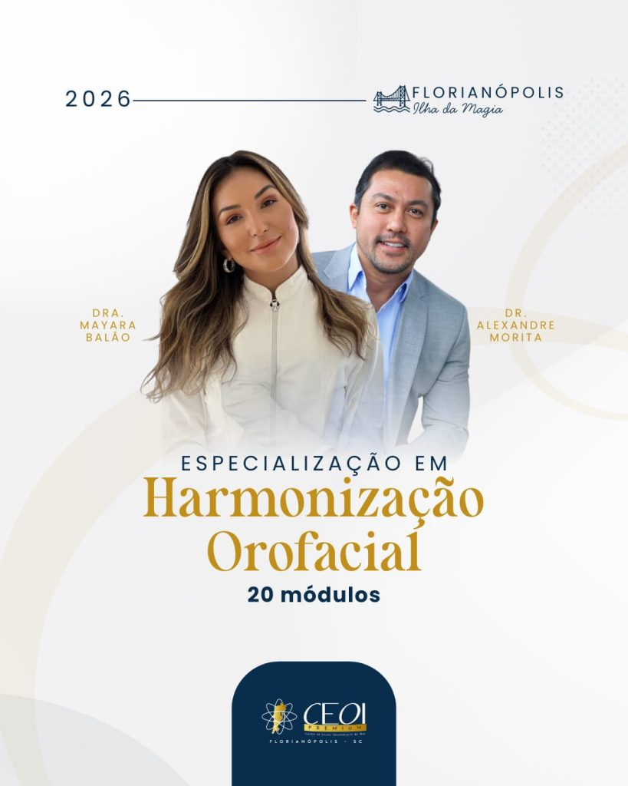

Especialização

Harmonização Orofacial
O objetivo geral do curso de Pós-Graduação Lato Sensu, Especialização em Harmonização Facial é habilitar e capacitar profissionais da saúde responsáveis, nas áreas do conhecimento concernentes à saúde estética, contribuindo para o desenvolvimento do setor da região em que atuam.
Ver o curso